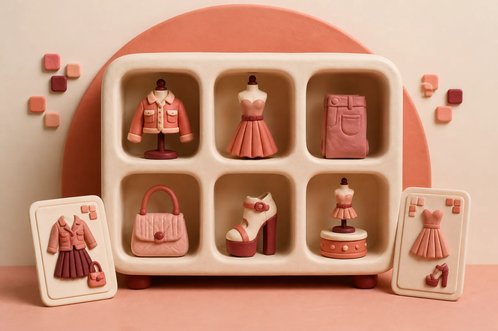

STEP 01 · START A FITTING
Bring the photo.
Borrow the look.
Add one clear photo of yourself and either paste a public Instagram link or upload an outfit image.
1Add your photoClear face and body
→
2Choose a lookLink or upload
→
3Review the fitPowered by YouCam
→
4Explore in 3DRotate and relight
STEP 02 · CHOOSE THE OUTFIT
Select your
preferred look.
Distinct clothing options are presented separately, with repeated video frames already grouped.
Identifying available outfits…
Your clothing options will appear here.
Select an outfit
YouCam will apply only the option you confirm.
STEP 03 · YOUCAM PREVIEW
Your look,
on you.
Review identity, garment placement, and color before confirming the fitting.
STEP 04 · CREATE YOUR 3D LOOK
Every angle.
One consistent look.
LOOK ID—AVAILABLE
01Received
02Views
03Review
043D creation
05Complete
A
Consistent angle views
AZ —° / EL 10°
B
Interactive 3D result
YOUR LIBRARY
Looks worth
coming back to.
Revisit completed looks and track any creations currently in progress.
Saved looks

YOUR LOOK ARCHIVEYour collection is ready.
Completed 3D fittings will appear here for convenient access.